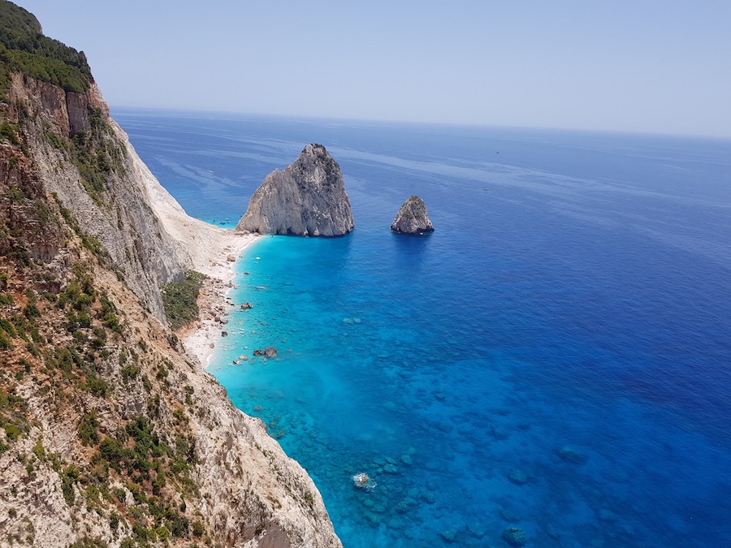
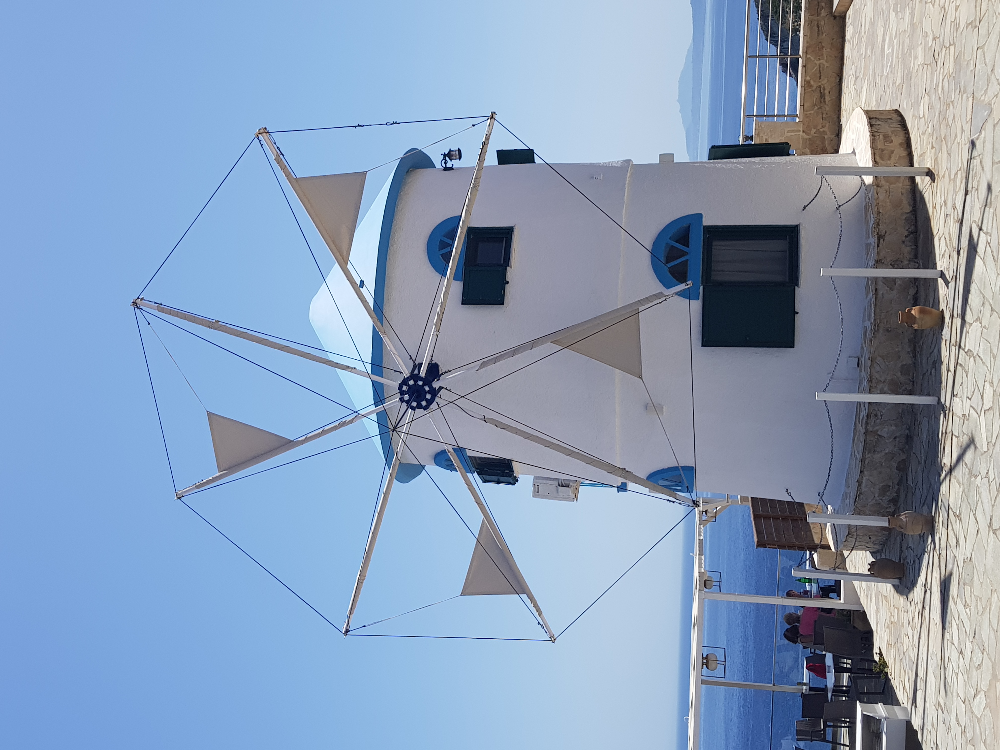
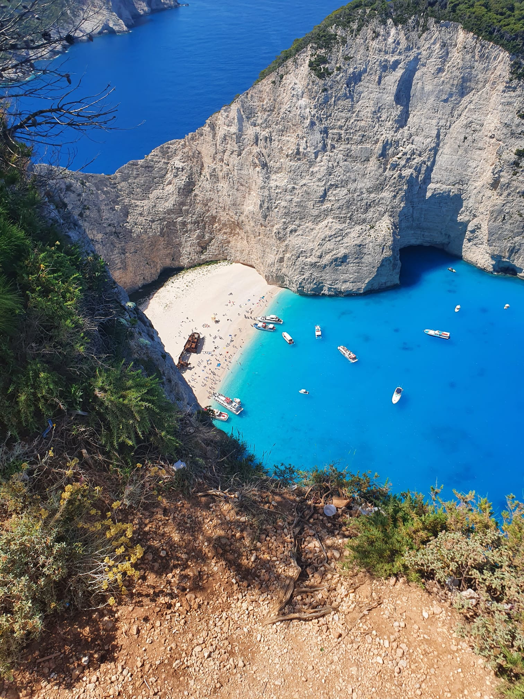
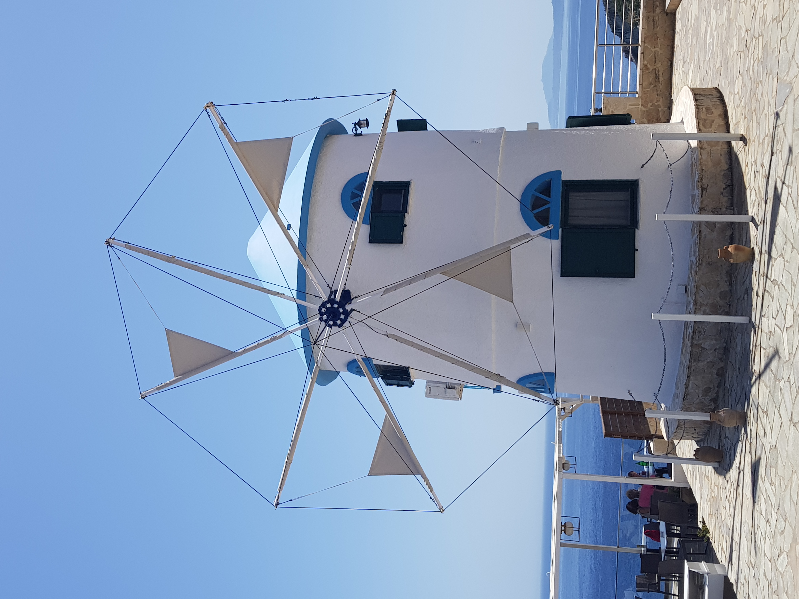
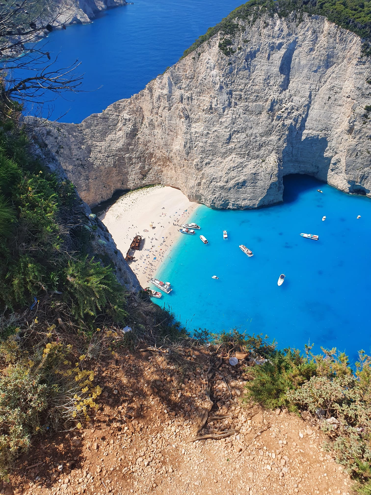

Algemene informatie
Zakynthos is een geliefde vakantiebestemming in Griekenland. Het Eiland behoort tot de Ionische eilanden. Het eiland Zakynthos heeft in totaal 41,000 inwoners en een oppervlakte van 406 km2 en is hierdoor het 3e grootse eiland van de eilanden groep, alleen Kefalonia en Corfu zijn groter. Hierdoor is er ook veel te zien en te beleven op het mooie eiland. Het eiland heeft een mooie groene natuur en een heerlijk klimaat. In het hoogseizoen kunnen de temperaturen oplopen tot wel 40 graden.
Zakynthos staat vooral bekend om de schildpadden, daarom word het ook wel het schildpaddeneiland genoemd. De schildpadden die je tegen komt op Zakynthos zijn de "Caretta Caretta" schildpadden. Deze schildpadden komen elk voorjaar naar de baai van Laganas toe om eieren te leggen. Het nestgebied is sinds enkele jaren een nationaal maritiem park, dat komt omdat deze schildpadden een bedreigd diersoort zijn en ze dus beschermt moeten worden. Bij het eilandje Marathonisi heb je het meeste kans om de schildpadden te spotten, dit ligt ten zuidoosten van Zakynthos. Half mei tot half oktober is de kans het grootst dat je de schildpadden spot.
Het icoon van Zakynthos is het Shipwreck Beach, wat iedereen wel gezien moet hebben als ze een vakantie naar Zakynthos boeken. Deze plek is ongetwijfeld de meest gefotografeerde plek van Zakynthos. Door de felblauwe zee en de ligging tussen de kalkstenen kliffen, maakt het een mooi plaatje. Je kan er op twee manieren komen, je kan naar het uitkijkpunt rijden met de auto of je kan een excursie of boot huren waardoor je ook echt op het strand zelf kan komen.
Zakynthos is dus een perfecte vakantiebestemming. Er is voor ieder wat wils, of je nou met je kinderen op vakantie gaat, met je vrienden, met je partner of alleen, er is genoeg te beleven. Er zijn genoeg leuke plekken die je kan bezoeken, het is dan wel leuk als je een auto huurt dan kan je alle mooie plekken ontdekken. De grieken zijn heel gastvrij en er is fantastisch eten, wat wil je nog meer??
Mijn favoriete plekken:


 


